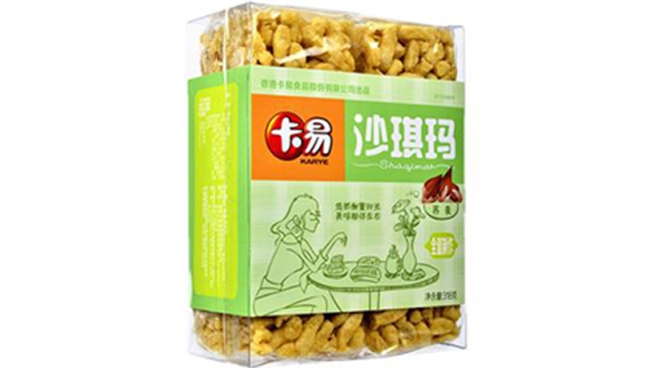

1.消费者一码/一键溯源 消费者使用手机扫描产品包装上的二维码，或者登陆717商城点击溯源查询即可快速查看丰富详尽的农产品档案。
2.生产者品牌展示 通过溯源系统的管理平台，生产者自行维护产品以及企业基本信息，生产环境、生产过程、实时视频信息等，建立完善丰富的农产品档案。
3.监管者全程追溯 监管部门或其他监管者可通过溯源系统对进驻717商城溯源平台的相关农产品以及生产者进行种植过程的全程监督，可以追根溯源，在一定程度上可保障食品的安全。

品种饼干糕点
品种饼干糕点
溯源档案
档案完整度
绿色食品认证已检测
内蒙古阳光满分健康食品有限公司，旨在利用先进的物联网、移动互联网等技术改造、创新传统食品行业，保证食品健康安全，实现其商品价值和利润地提升。
网店购买 实体店购买 销售联略方式
升元冷面 荞麦冷面黑龙江特产
升元冷面 荞麦冷面黑龙江特产
升元冷面 荞麦冷面黑龙江特产